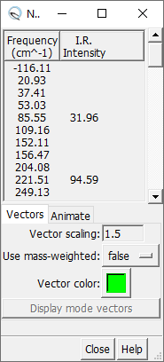

ChimAARON makes it easy to visualize normal vibrational modes in Chimera. In order to load the normal modes of a molecule, ChimAARON requires a Gaussian .log file containing frequency information.
To load the frequency information, go to the option under → . You will then be prompted to locate your frequency file. Once the file is selected, a dialog menu will open up listing the normal modes. These modes may be sorted by frequency or IR Intensity. A mode can be selected from the table and visualized by pressing the button or button.
There are two ways to visualize a normal mode in this dialog:
When a normal mode is displayed using vectors, you can change several things about the vectors:
When loading the mode as an animation, you have different settings: